2026年11月6日至8日，第五届闽台非遗数字化保护与智能处理学术会议在泉州举行，本届会议与福建省人工智能学会2026年学术年会同场举办。会议聚焦人工智能前沿技术、大模型与智能体、闽台非遗数字化保护与智能处理议题，汇聚省内外高校、科研院所及企业界专家学者，共同探讨智能科技赋能产业升级与文化遗产保护传承的创新路径。
文化和旅游部重点实验室年度工作会议：凝练方向，谋划新局
6日晚，闽台非遗文化数字化保护与智能处理文化和旅游部重点实验室召开年度工作会议。学术委员会主任郭宗明研究员，学术委员会委员周昌乐教授、赵铁军教授、董军教授、郭海鞍教授、徐迎庆教授、冯结青教授，实验室主任史晓东教授，副主任姚俊峰教授、王量量教授、苏劲松教授及邀请嘉宾和实验室成员参加会议。会议听取了史晓东教授所作的实验室年度工作汇报，与会人员围绕科研布局、平台建设、成果转化和两岸文化交流展开研讨，并就实验室下一阶段发展方向提出意见建议。
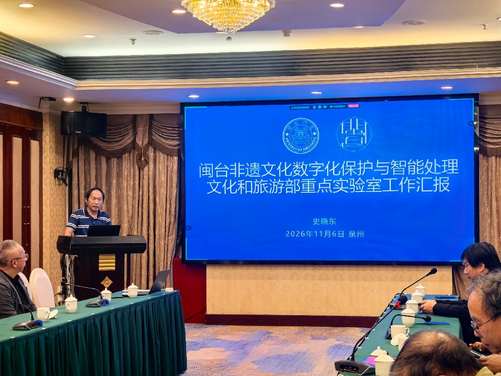
实验室主任史晓东教授作工作汇报
过去一年，实验室围绕闽台非遗数字化保护与传承，统筹推进科研创新、重大项目、平台建设和人才培养，取得阶段性成效。全年发表学术论文80余篇，其中多篇发表于CCF A类会议和期刊；获2025年度福建省科学技术发明一等奖、科学技术进步一等奖，科研创新能力和学术影响力稳步提升。重大项目与平台建设方面，提线木偶互动表演系统获批2026年度重点实验室资助项目，厦门市重大专项完成验收，福建省重大专项“闽台非遗数字基因库建设”通过中期评估。实验室初步建成多方言语音大模型，构建了覆盖闽南话、莆仙话、福州话、客家话等多种方言的数据集，并在此基础上推进闽台非遗大模型研发。学术交流与社会服务方面，廊桥非遗数字化工作获中央广播电视总台报道，文化和旅游部科技教育司副司长莅临实验室调研指导，实验室的行业影响力持续扩大。人才培养方面，实验室以研究计划为牵引，引导研究生围绕非遗数字化开展科研实践，促进人才培养与重点研究方向有效衔接。
与会专家充分肯定实验室一年来取得的进展，并对下一阶段发展提出建议：一是进一步凝练国家战略方向，推动科研组织方式由自由探索向有组织科研转变，积极争取文化和旅游部重点研发计划等国家级项目；二是深化文理交叉与跨校合作，吸纳台湾研究、人类学、旅游管理等文科力量，联合国内高校共建文化工程和数据集；三是加快技术产品化进程，围绕突破性技术探索产业化路径。
实验室负责人表示，下一阶段实验室将聚焦特色研究方向，完成非遗大模型技术路线论证，谋划闽台非遗文化重大传承工程，积极争取学校与地方政府支持，同步制定下一个五年发展规划。
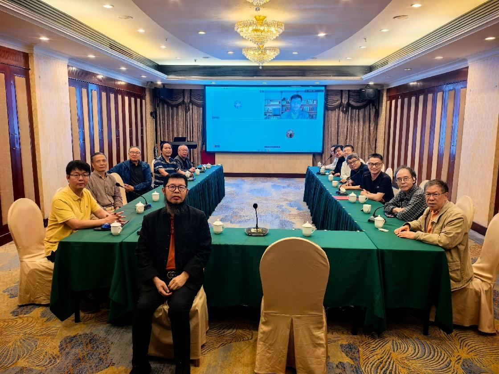
参会人员合影
大会报告：洞察前沿，启迪方向
浙江大学陈为教授作题为《面向中华传统文化的人工智能研究与实践》的报告，聚焦中国传统绘画、唐诗宋词等传统文化的多模态人工智能前沿技术，系统展示“汇画”“知画”“观画”“宋词缱绻”等平台与系统，并分享浙江大学科技与人文交叉学科建设经验。
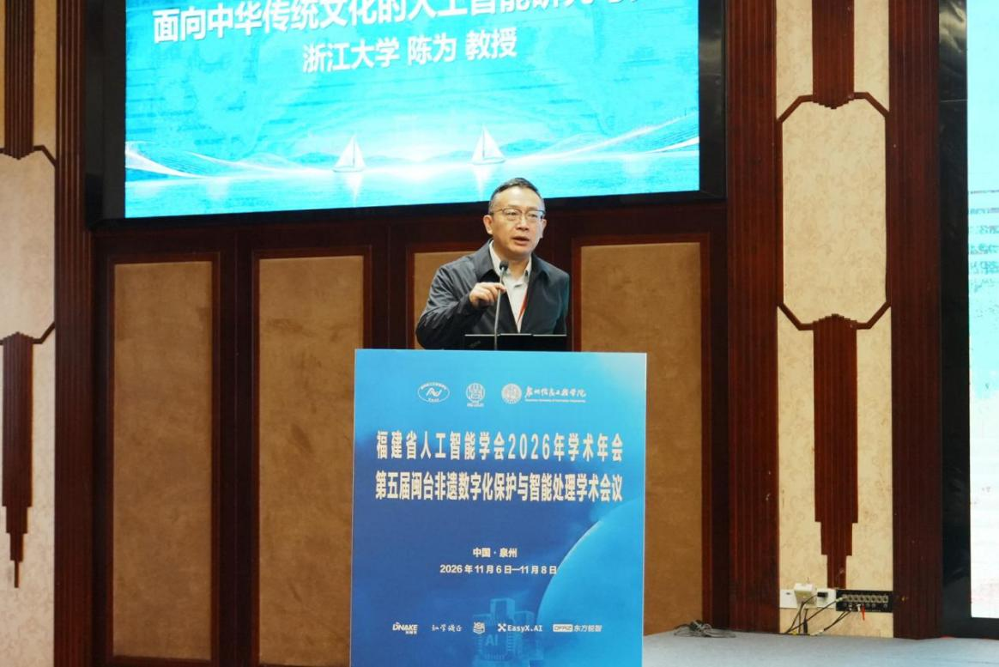
浙江大学 陈为 教授
中国人民大学赵鑫教授作题为《大模型智能体的高效构建方法》的报告，指出环境是智能体构建的核心，大模型接入沙盒环境后，即便面对与解题无关的任务，能力也会显著增强。围绕这一判断，报告介绍了三项代表性工作：从开源社区问题中自动复现带镜像的软件工程环境，以规模化合成训练数据；利用预测模型与奖励模型模拟软件执行环境；基于用户画像与技能库反向合成任务环境。报告还阐释了黑盒强化学习中轨迹重构、训推一致性对齐与跨框架泛化等关键技术，并对智能体自我进化及攻克真实复杂任务的前景作出展望。
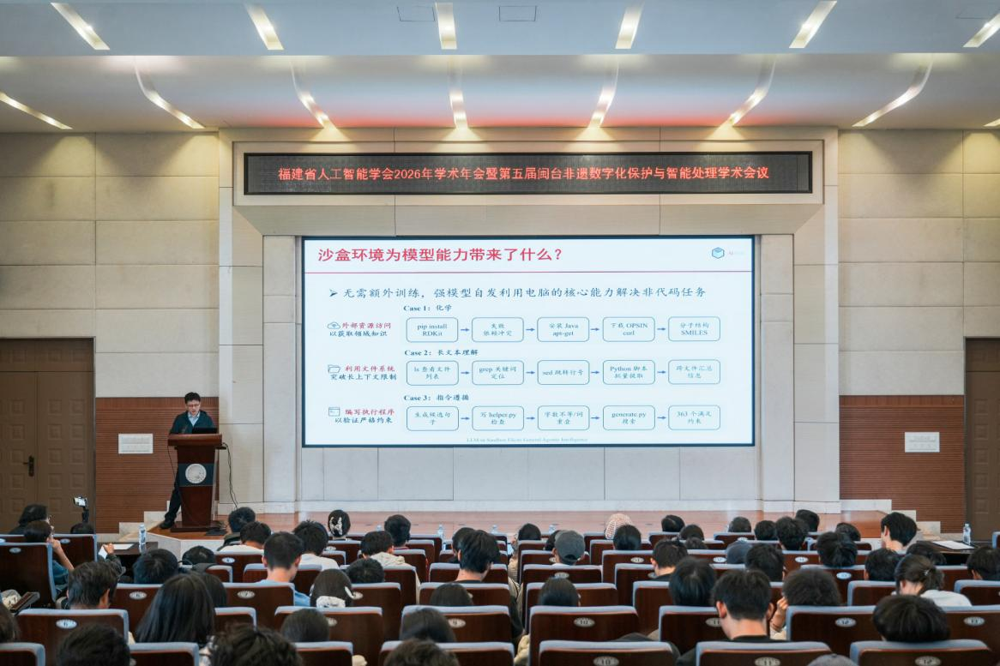
中国人民大学 赵鑫 教授
大语言模型与智能体论坛：从“能理解”走向“可信执行”
7日下午，大语言模型与智能体论坛举行。论坛邀请清华大学徐迎庆教授，哈尔滨工业大学（深圳）陈科海教授、张梅山副教授作专题报告。报告分别从多模态感知、可信推理和知识表征切入，勾勒出大模型智能体由“能理解”迈向“可信执行”的技术路径。
徐迎庆教授在《嗅觉计算与设计创新》报告中指出，气味虽无形，却具有极强的感官穿透力，在生产和生活中不可或缺。嗅觉计算融合人工智能、仿生传感与化学分析等技术，可对看不见、摸不到的气味信息进行感知与表征，在多个领域具有重要应用价值。
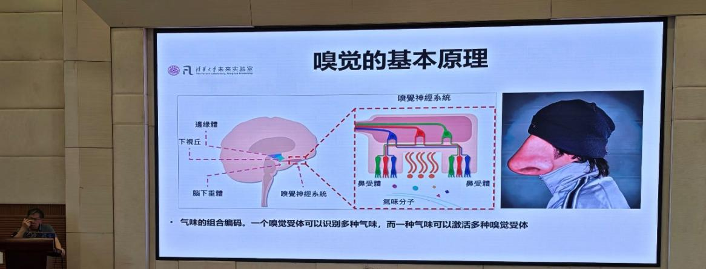
清华大学 徐迎庆 教授
陈科海教授在《大模型智能体可信推理》报告中，聚焦可信推理驱动的大模型智能体构建，分析当前智能体在多模态感知、强化学习优化和自主任务执行中存在的证据理解不充分、推理过程不稳定、奖励反馈不可靠、工具执行易出错等问题，并从多模态结构理解与证据校验、强化学习与对齐、自主智能体任务三个层面，探讨构建具备可信感知、稳定推理、可靠执行和持续进化能力的大模型智能体的方法。
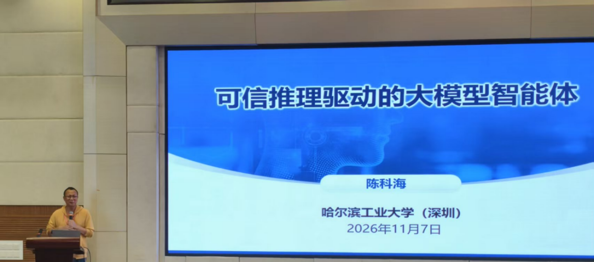
哈尔滨工业大学（深圳） 陈科海 教授
张梅山教授在《预训练Embedding技术的现状与未来》报告中，系统梳理Embedding技术的基本原理、核心方法及演进脉络，重点分析代表性模型的技术特点，并结合检索增强生成、私有知识库构建和大模型智能体等应用场景，探讨该领域面临的关键挑战、前沿方向和发展趋势。
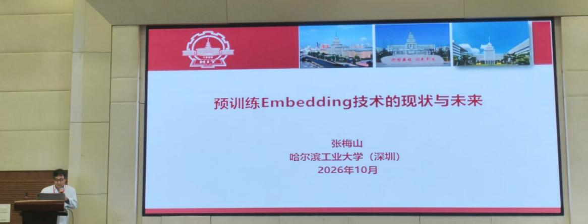
哈尔滨工业大学（深圳） 张梅山 教授
闽台非遗数字化保护与智能处理论坛：聚焦非遗，深度对话
闽台非遗数字化保护与智能处理论坛邀请武汉大学肖春霞教授、联合国教科文组织亚太地区世界遗产培训与研究中心李昕副秘书长作专题报告，并围绕非遗数字化保护与智能处理举行圆桌对话，为闽台非遗文化的创造性转化、创新性发展提供思路。
肖春霞教授在《3D高斯泼溅表示及其在文物三维重建中的应用》报告中介绍，3D高斯泼溅是一种高效的三维重建与渲染技术，已在自动驾驶仿真、数字资产构建、影视特效制作和文化遗产数字化呈现等领域展现出应用潜力。报告结合物件重建、大场景三维重建与新视角合成、数字人重建及文物三维重建与呈现等具体工作，对该领域有待深入研究的问题进行了展望。
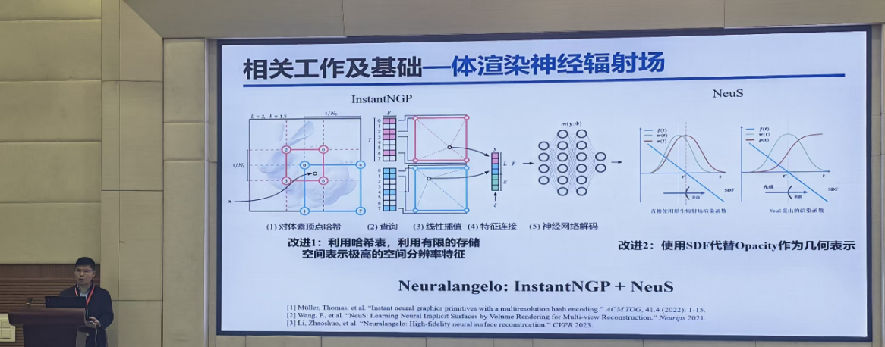
武汉大学 肖春霞 教授
李昕副秘书长在《多元共创：数字化驱动的遗产教育模式创新》报告中，结合“全球世界遗产教育创新案例”（AWHEIC）的发展历程，介绍全球数字化驱动遗产教育模式创新的最新案例与发展趋势，呼吁各方携手共建数字化平台，协同探索整体性模式创新，推动遗产保护传承更好融入数字时代。
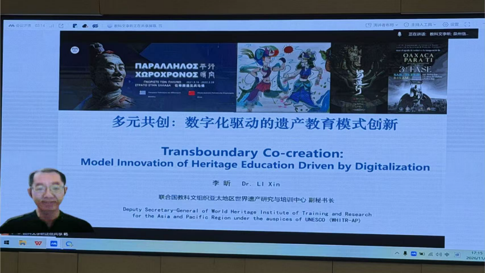
联合国教科文组织亚太地区世界遗产培训与研究中心 李昕 副秘书长
在报告结束后的圆桌对话环节，与会学者围绕“多模态大模型如何赋能闽台非遗的传承与创新”这一主题展开研讨。对话由史晓东教授主持，董军教授、宋建文教授、李俊凯教授、苏劲松教授担任嘉宾。与会学者从技术实现与人文价值两个维度，就非遗数字资源的采集建档、智能处理与活化利用深入交换意见，并在闽台非遗数字基因库建设、跨机构协同攻关等议题上形成初步共识。
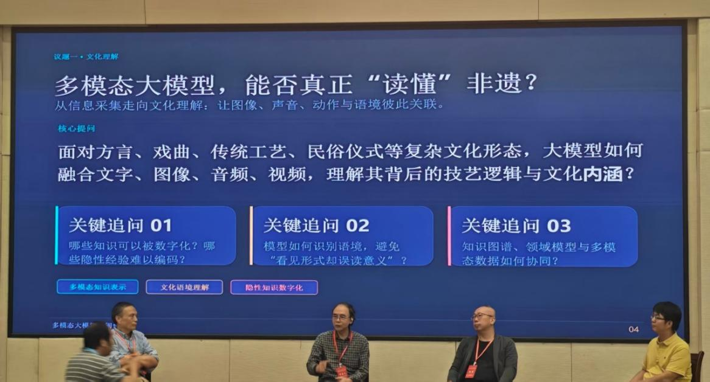
圆桌对话
与会代表一致认为，本次会议既是一场高水平的学术交流盛会，也是推动人工智能前沿技术与闽台非遗数字化保护深度融合的重要契机，为智能技术创新与文化遗产保护传承提供了新思路，也为闽台文化数字化保护与创新发展拓展了合作空间。
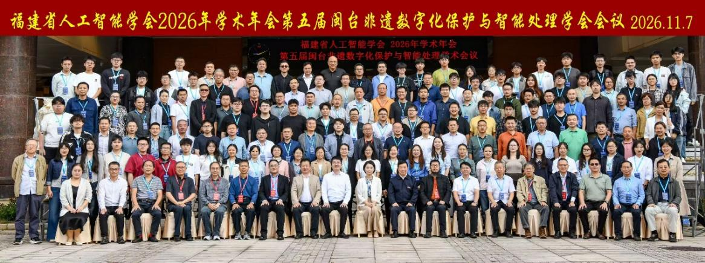
福建省人工智能学会2026年学术年会暨第五届闽台非遗数字化保护与智能处理学术会议合影